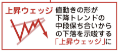

-
 Connect
Connect
-
 👈👈ギガ速FX_index
👈👈ギガ速FX_index
-
👈Signal Card 20
#18_ チャートパターン
- 🔙 前のページへ戻る
- 🔜 次のページへ進む
#18_ チャートパターン
「チャートパターン」 は 「フォーメーション分析」 とも呼ばれ、値動きが全体として示す形状に注目して、
相場の天井圏・大底圏やトレンドの加速を読み取る分析方法です。
チャートパターンには相場の天井圏・大底圏によく出る「天底タイプ」とトレンドの途中に出る「中段保ち合いタイプ」があります。
ショーターの私が主に探すのは相場が天井を打った時に出現しやすい値動きの形状です。
そのパターンには、高値を 2 度つけて下落に転じる「ダブルトップ」、高値を 3 度つけてから下落する「トリプルトップ」、
トリプブルトップの中でも 2 度目の高値が最も高い 「ヘッド&ショルダー」(日本では「三尊天井」と呼びます) があります。
逆に大底圏に出現して相場反転のシグナルになるのが「ダブルボトム」、「トリプルボトム」、「逆ヘッド&ショルダー」
(日本では 「 逆三尊 」 とも呼ばれます) です (図2-23)。
図2-23 天井・大底圏に出現するチャートパターン
ダブルトップ や トリプルトップが完成するのは、２度、３度と天井を打つ過程で出来た安値を割り込んだ時です。
その安値は 「ネックライン」 と呼ばれます。
エントリー前には、チャートの全体像が分かるように表示時間を拡大して、天井圏や大底圏でどんな値動きの形になっているかを確かめてみてください。
図2-24 はかなり短時間の ポンドオージーの ５分足チャートの値動きですが、高値圏でダブルトップ、安値圏でダブルボトムが出現 しています。
図の ① のポイントのようにダブルトップの形になったものの、中間安値を割り込まず完成しないこともあります。
また ② のようにダブルトップ形成後にネッツクラインをいったん割り込んだものの、そこからしばらく横ばいが続くこともあります。
しかし、 ③ のダブルボトム はちょうど ネックラインの高値超えが ４時間足 20sma 超えと重なった こともあり、非常にきれいな形で上昇しています。
図2-24 チャートパターンを活用したトレードの基本
この図でも分かるように、例えばダブルトップ形成時のショートエントリーのポイントは、
● 高値を２度つけて下落し始めたところ (ダブルトップをつけたものの、完成はしていない状態)
● ネックラインを割り込んでダブルトップが完成したところ
● ダブルトップ完成後に再び反転上昇してネックラインにリバースタッチしたところ
の ３つになります。
一方、中段保ち合い型のチャートパターンは、上昇や下落の過程でいったんレンジ相場が続いた後、トレンド相場が再開する時に発生する形状に注目するものです。
図2-25 トレンド相場の中段保ち合いに出現するチャートパターン(下降トレンドの場合)
図2-25 に示したように、
● 「三角保ち合い (英語では 「 トライアングルTriangle
삼각수렴 」 と呼ぶ)」
● 「 フラッグFlag
깃발 」
● 「 ウェッジWedge

쐐기 」
● 「単純な長方形のレンジ (英語では 「 レクタングルRectangle
「長方形」
正方形を意味する「square」とよく混同される 」 と呼ぶ)」
など様々な形があります。
下降トレンドの途中で、単純な長方形のレンジ相場が出現した時にショートエントリー
のポイントになりうるのは、
● レンジ上限にタッチレして下落したポイント
● レンジ下限を割り込んだポイント
● いったん上昇に転じてレンジ下限にリバースタッチしたポイント
の ３つです。
チャートパターンも MA 同様、精度の高いシグナルになります。
ただし、チャートパターンは 「どこでそれが出たか ?」 が最重要です。
５分足レベルのチャートパターンは単独でエントリー根拠に使わながいようにしてください。
ローソク足のチャートパターンをエントリー根拠にする時は形、完成までの過程、上ヒゲの長いローソク足などがあるかないか、
そして上位足チャートから見て「意味のある場所で出現したか」 を確認して、複合的に判断して行きます。
現在の私は、出現した位置が「過去に何度も意識された週足レベルでも分かる価格帯」なら、完成前から完成後のイメージを思い描いて、
1 分足チャートも確認して下げの示唆がある場合には早めに仕掛ける時もあります。
ただ、慣れないうちは無理に超頂点を狙わないで、５分足で示唆の確定を待ってください。
チャートパターン は 「 フォーメーション分析 」 とも呼ばれ、値動きが全体として示す形状に注目して、
相場の天井圏・大底圏 や トレンドの加速を読み取る分析方法です。
ショーターの私が主に探すのは相場が天井を打った時に出現しやすい値動きの形状です。
上昇や下落の過程でいったんレンジ相場が続いた後、トレンド相場が再開する時に発生する形状に注目するものです。
チャートパターンもMA同様、精度の高い Signal（シグナル）になります。
ただし、チャートパターンは「どこでそれが出たか？」が最重要です。 5分足レベルのチャートパターンは単独でエントリー根拠に使わないようにしてください。
ローソク足のチャートパターンをエントリー根拠にする時は形、完成までの過程、上ヒゲの長いローソク足などがあるかないか、そして上位足チャートから見て「意味のある場所で出現したか」を確認して、複合的に判断して行きます。
現在の私は、出現した位置が「過去に何度も意識された週足レベルでも分かる価格帯」なら、完成前から完成後のイメージを思い描いて、1分足チャートも確認して下げの予兆[よちょう]
예조がある場合には早めに仕掛ける時もあります。
ただ、慣れないうちは無理に超頂点を狙わないで、5分足で示唆[しさ]
直接的に指し示すのではなく、間接的にそれと判断されるような形で（多分に断片的に）手がかりを提供すること。
제안の確定を待ってください。